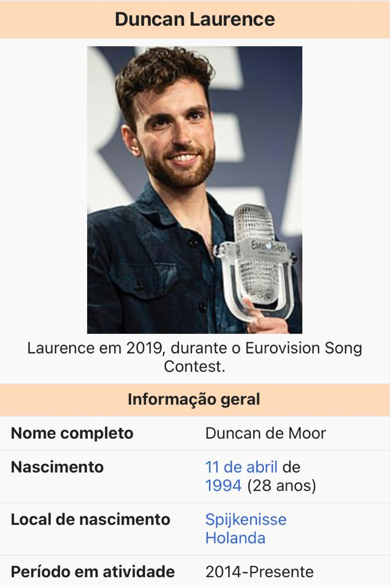

Duncan Laurence
|  | Duncan de Moor, profissionalmente conhecido como Duncan Laurence (Spijkenisse, 11 de abril de 1994), é um cantor holandês que venceu o Eurovision Song Contest 2019 em Tel Aviv, Israel,[1] com a música "Arcade", representando os Países Baixos |
Biografia
Nascido em Spijkenisse, Laurence cresceu em Hellevoetsluis. Ele começou sua carreira musical na Rock Academy em Tilburg, tocando em várias bandas escolares, incluindo a sua, The Slick and Suited. Formada em 2013, a banda se apresentou no Eurosonic Noorderslag.
Laurence participou da quinta temporada de The Voice of Holland, escolhendo Ilse DeLange como sua mentora. Ele avançou para o Cross Battles / Semi Finals antes de ser eliminado. Ele se formou na Academia Rock em 2017. Ele, com Jihad Rahmouni, escreveu a música "Closer" no duo do K-pop duo do TVXQ em 2018, New Chapter # 1: The Chance of Love.[8] Em janeiro de 2019, Laurence foi internamente selecionado para representar os Países Baixos no Eurovision Song Contest 2019. Sua música "Arcade" foi revelada pela primeira vez em março de 2019. Em 18 de maio de 2019, Duncan Laurence venceu o evento em Tel Aviv, Israel com 498 pontos de 41 júris internacionais e o voto do público. Os jurados deram-lhe 237 pontos, enquanto o voto do público deu-lhe 261 pontos. Ele terminou 27 pontos à frente da Itália e 123 pontos à frente da Rússia, os dois vice-campeões. Ele é o quinto participante holandês a vencer a competição e o primeiro desde que o Teach-In venceu o Eurovision Song Contest 1975 com a música "Ding-a-dong". Laurence fará uma turnê na Holanda e na Europa no final de 2019[10] com um concerto também marcado para Amsterdã em março de 2020.